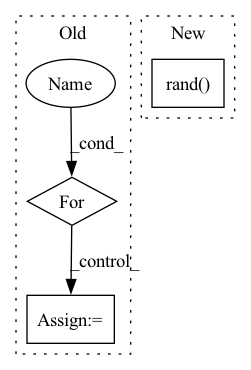

Pattern ID :10487
Before Change
qmc_loss = QMCLoss(self.wf,method="energy")
for n in range(nepoch):
for data in dataloader:
data = Variable(data).float()
dp = self.net(data)
print(dp.shape)
param += dp
loss = qmc_loss(param,data)
self.opt.zero_grad()
loss.backward()
self.opt.step()After Change
def train(self,nepoch):
pos = self.sample()
pos = torch.rand( 3,self.sampler.nwalkers)
dataset = QMC_DataSet(pos)
dataloader = DataLoader(dataset,batch_size=self.batchsize)
qmc_loss = QMCLoss(self.wf,method="variance")In pattern: SUPERPATTERN
Frequency: 3
Non-data size: 3
Instances Fragment ID: 36479452
Project Name: nlesc-jcer/qmctorch
Commit Name: 81d318304529d9586b1c6e9d5407be8851a1b00f
Time: 2019-05-06
Author: nicolas.gm.renaud@gmail.com
File Name: pyCHAMP/solver/neural_net.py
M Class Name: NN
N Class Name: NN
M Method Name: train(2)
N Method Name: train(3)
M Parent Class: SOLVER_BASE
N Parent Class: SOLVER_BASE
M File Name: pyCHAMP/solver/neural_net.py
N File Name: pyCHAMP/solver/neural_net.py
M Start Line: 66
M End Line: 93
N Start Line: 58
N End Line: 87
Before Change
gan_dataset = torch.utils.data.ConcatDataset([source_class_dataset, target_class_dataset])
gan_dataloader = self.dataset.get_dataloader(
mode="train", dataset=gan_dataset, batch_size=self.dataset.batch_size, num_workers=0)
for i , (data, label) in enumerate(gan_dataloader):
data = torch.tensor(data)
gan_data = data.to(env["device"])
self.wgan.train(gan_data)
source_encode = self.wgan.get_encode_value(source_imgs, self.poison_num).detach()After Change
poison_label = self.target_class * torch.ones(len(target_imgs), dtype=torch.long, device=target_imgs.device)
poison_imgs, _ = self.model.remove_misclassify(data=(target_imgs, poison_label))
poison_imgs= torch.rand( poison_imgs.size()) .to(target_imgs.device)
poison_imgs, _ = self.pgd.craft_example(_input=poison_imgs)
poison_imgs = self.add_mark(poison_imgs).cpu()
Fragment ID: 36479454
Project Name: ain-soph/trojanzoo
Commit Name: 29ef13a4f7b41cb83bda18e549dfbb3755254244
Time: 2020-08-31
Author: corazju@zju.edu.cn
File Name: trojanzoo/attack/backdoor/clean_label.py
M Class Name: Clean_Label
N Class Name: Clean_Label
M Method Name: attack(3)
N Method Name: attack(3)
M Parent Class: BadNet
N Parent Class: BadNet
M File Name: trojanzoo/attack/backdoor/clean_label.py
N File Name: trojanzoo/attack/backdoor/clean_label.py
M Start Line: 83
M End Line: 132
N Start Line: 84
N End Line: 139
Before Change
predefined_A = torch.tensor(mock_adj.toarray()).to(device)
x_all = torch.zeros(batch_size,seq_in_len,num_nodes,in_dim)
for i in range(batch_size):
for j in range(seq_in_len):
x, _ = create_mock_data(number_of_nodes=num_nodes, edge_per_node=8, in_channels=in_dim)
x_all[i,j] = x
model = MTGNN(gcn_true, buildA_true, gcn_depth, num_nodes,
dropout=dropout, subgraph_size=subgraph_size,
node_dim=node_dim,After Change
_, edge_index = create_mock_data(number_of_nodes=num_nodes, edge_per_node=8, in_channels=in_dim)
mock_adj = to_scipy_sparse_matrix(edge_index)
predefined_A = torch.tensor(mock_adj.toarray()).to(device)
x_all = 2 * torch.rand( batch_size, seq_in_len, num_nodes, in_dim) - 1
model = MTGNN(gcn_true, buildA_true, gcn_depth, num_nodes,
dropout=dropout, subgraph_size=subgraph_size,
node_dim=node_dim, Fragment ID: 36479448
Project Name: benedekrozemberczki/pytorch_geometric_temporal
Commit Name: 2995bbe0ea41e33175133eefde748771c07e96e9
Time: 2021-03-25
Author: He_YX@outlook.com
File Name: test/convolutional_test.py
M Class Name: AnonimousClass
N Class Name: AnonimousClass
M Method Name: test_mtgnn(0)
N Method Name: test_mtgnn(0)
M Parent Class:
N Parent Class:
M File Name: test/convolutional_test.py
N File Name: test/convolutional_test.py
M Start Line: 204
M End Line: 229
N Start Line: 204
N End Line: 224